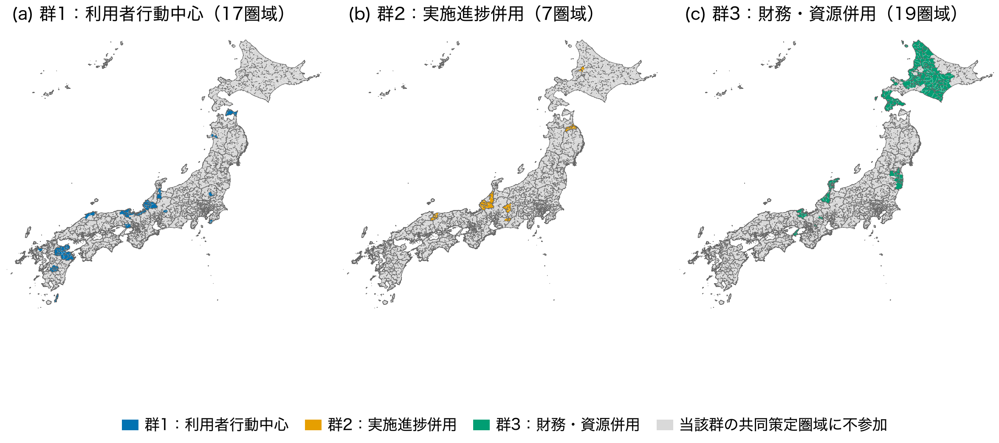

RESEARCH PREPRINT
地域公共交通計画の目標指標構成と公共交通の供給条件は関連しているか
概要
2022年度以降に開始した地域公共交通計画について、目標指標が測る対象と、バス停・鉄道駅の近くに住む人口の割合との関係を全国規模で分析した。単独市町村計画9,204指標と共同策定計画514指標を、固定済みモデルによって七つの測定対象へ分類した。
主な結果
- 単独市町村計画
- 目標指標構成の異なる三群で、公共交通人口カバー率の平均は84.0〜85.2％であった。
- 測定対象の重なり
- 人口カバー率を直接測る66指標を除くと、「交通サービスの状態」と人口カバー率との順位相関は .123 から .092 へ低下した。
- 共同策定計画
- 非標準指標では、「利用者の行動・認識」が ρ = −.455、「財務・資源・実施能力」が ρ = .416 であった。
共同策定計画の副分析は圏域の重複を含むため、順位相関を記述値として掲載している。本稿は交通供給から目標指標選択への因果効果を推定しない。
共同策定圏域の分布

データと方法
計画は国土交通省MOBILITY UPDATE PORTALから取得した。交通供給には2022年国土数値情報のバス停留所・鉄道データ、人口には2020年国勢調査250mメッシュを用いた。分析方法はWard法による階層的クラスター分析とSpearman順位相関である。計画資料の採否と指標分類には、新たな人手判定を加えていない。